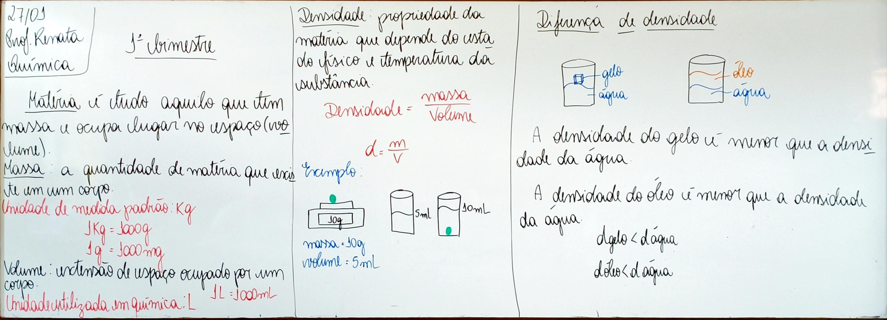
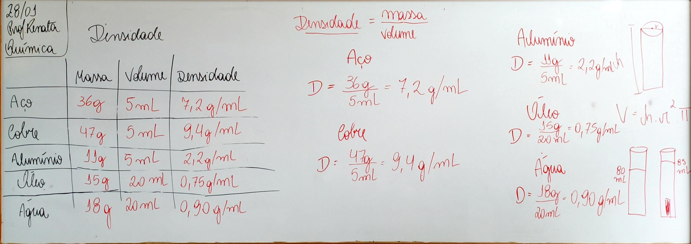
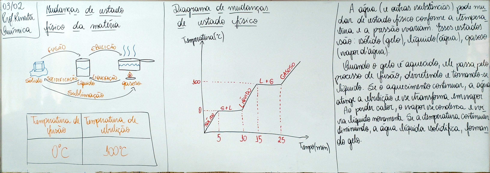
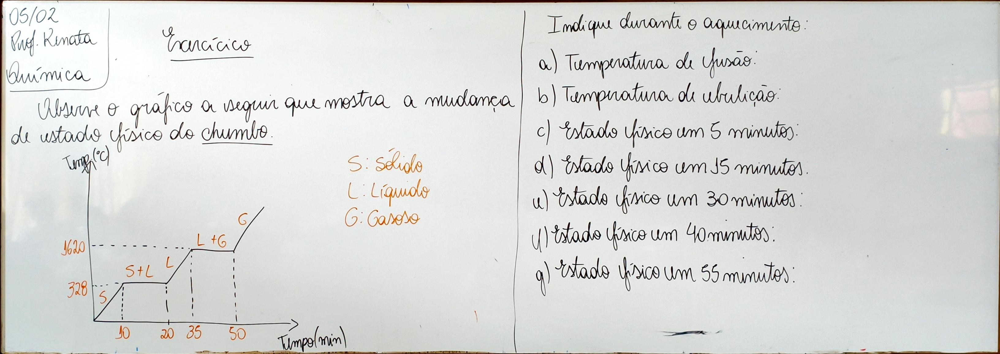
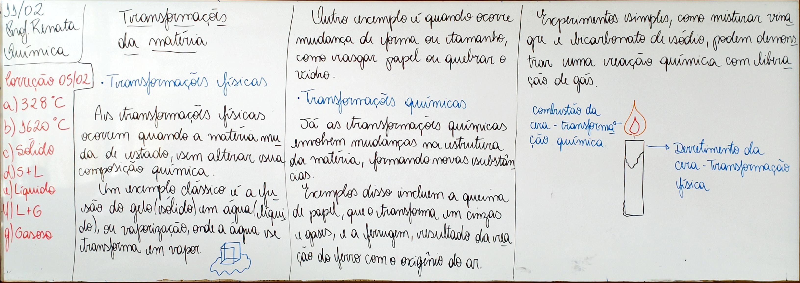
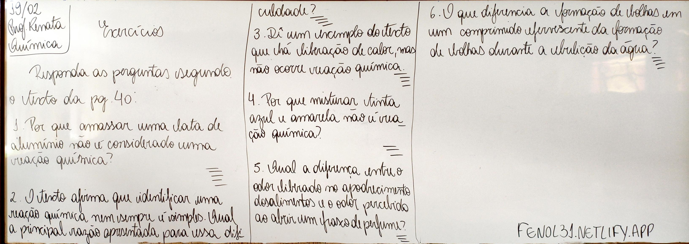
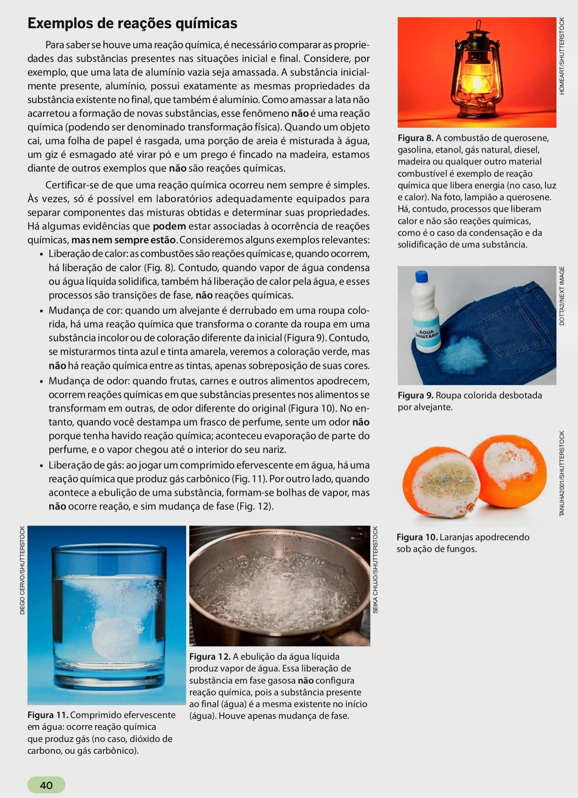
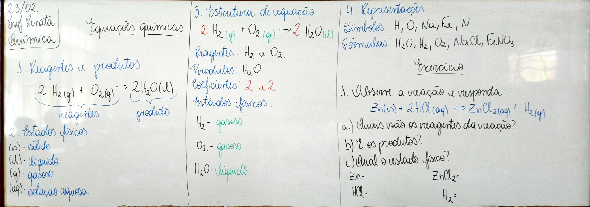

Texto 3: A Química da Terra Primitiva: A Origem da Vida a Partir de Substâncias Simples e Compostas
A Terra primitiva, há cerca de 4,5 bilhões de anos, oferecia um ambiente drasticamente diferente do que conhecemos hoje, com condições que foram cruciais para o surgimento da vida. A química desempenhou um papel central nesse processo, em que substâncias simples e compostas interagiram para formar as primeiras moléculas que deram origem aos organismos vivos. A atmosfera primitiva da Terra era composta principalmente por gases como metano (CH₄), amônia (NH₃), vapor d’água (H₂O) e dióxido de carbono (CO₂). Essas substâncias simples formavam a base do ambiente químico primordial. Através de processos como descargas elétricas, proporcionadas por tempestades, e a radiação ultravioleta, esses compostos simples começaram a se reorganizar, gerando moléculas mais complexas, como aminoácidos, açúcares e bases nitrogenadas — componentes essenciais para a formação de proteínas, DNA e RNA. Essas interações químicas entre substâncias simples e compostas culminaram no surgimento das chamadas “sopa primordial”, um caldo de moléculas orgânicas que se acredita ter sido o berço dos primeiros organismos unicelulares. Essas moléculas mais complexas, formadas por interações entre compostos inorgânicos, ilustram como as reações químicas básicas foram essenciais para a transição entre matéria não viva e os primeiros sinais de vida. O surgimento da vida na Terra primitiva pode ser visto como um exemplo profundo de como a química — especialmente a interação entre substâncias simples e compostas — é a base para processos biológicos mais complexos, mostrando que as condições adequadas, junto com os elementos e moléculas corretas, podem levar ao surgimento da vida.
1. Quais eram os principais gases presentes na atmosfera da Terra primitiva?
Os principais gases eram metano (CH₄), amônia (NH₃), vapor d’água (H₂O) e dióxido de carbono (CO₂).
2. Explique como as descargas elétricas e a radiação ultravioleta contribuíram para a formação de moléculas mais complexas na Terra primitiva.
As descargas elétricas e a radiação ultravioleta forneceram energia para que os compostos simples reagissem e se reorganizassem, formando moléculas mais complexas como aminoácidos, açúcares e bases nitrogenadas.
3. Qual a importância das substâncias simples, como metano e amônia, no surgimento da vida?
Essas substâncias simples formavam a base do ambiente químico primordial e serviram como matéria-prima para a formação de moléculas orgânicas essenciais à vida.
4. Descreva o processo pelo qual compostos simples na atmosfera primitiva se reorganizaram para formar aminoácidos e outras moléculas essenciais.
Sob a ação de fontes de energia como descargas elétricas e radiação ultravioleta, os compostos simples reagiram entre si, formando moléculas mais complexas por meio de reações químicas sucessivas.
5. O que é a “sopa primordial” e qual seu papel no surgimento da vida?
A sopa primordial era um caldo rico em moléculas orgânicas formadas na Terra primitiva, considerado o ambiente onde surgiram os primeiros organismos unicelulares.
6. Como as moléculas orgânicas formadas na Terra primitiva se relacionam com o surgimento dos primeiros organismos vivos?
Essas moléculas orgânicas serviram como base estrutural e funcional para os primeiros seres vivos, participando da formação de estruturas e processos biológicos iniciais.
7. Explique como a interação entre substâncias simples e compostas pode ter facilitado a transição da matéria não viva para a matéria viva.
A interação entre substâncias simples e compostas possibilitou a formação gradual de moléculas cada vez mais complexas, favorecendo a organização química necessária para o surgimento da vida.
8. Qual a relação entre a formação de proteínas, DNA e RNA com as condições químicas da Terra primitiva?
As condições químicas da Terra primitiva favoreceram a formação de moléculas como aminoácidos e bases nitrogenadas, que são componentes fundamentais das proteínas, do DNA e do RNA.
9. Como o ambiente químico da Terra primitiva foi diferente do ambiente atual, e por que essas diferenças foram cruciais para o surgimento da vida?
O ambiente primitivo possuía uma atmosfera rica em gases simples e intensa energia de descargas elétricas e radiação, diferente do ambiente atual. Essas condições favoreceram reações químicas essenciais para o surgimento da vida.
10. Por que a química pode ser considerada a base dos processos biológicos mais complexos que surgiram na Terra primitiva?
Porque as reações químicas permitiram a formação de moléculas orgânicas fundamentais, que deram origem às estruturas e funções biológicas mais complexas dos seres vivos.